Questão 1 · Sepese Neonatal Tardia · 4000182998Recém-nascido com 9 dias de vida apresenta di culdade para respirar há 1 dia, com piora nas últimas horas, além de não estar mamando bem. Exame físico: regular estado geral, icterícia leve até cicatriz umbilical, hipoatividade, gemência, batimento de aleta nasal, tiragem intercostal e retração diafragmática, FR 80 ipm, FC 170 bpm, temperatura axilar 37,5 ºC. A conduta mais adequada é
A jejum, iniciar terapia de hidratação venosa, monitorizar, avaliar necessidade de suplementação de oxigênio e solicitar internação hospitalar.
B antitérmico, iniciar antibioticoterapia por via oral e orientar a família para observação domiciliar e reavaliação em 48 horas.
C antitérmico, leite materno por sonda nasogástrica, iniciar tratamento com ceftriaxona intramuscular e realização de radiografia de tórax.
D expansão com soro fisiológico 40 ml/kg em 20 minutos, dosagem de bilirrubinas e realização de radiografia de tórax.
Questão 2 · Ventilação com pressão positiva · 4000182997Recém-nascido em sala de parto, após a extração completa do concepto da cavidade uterina apresentou hipotonia e choro fraco. AP IG 36 semanas, parto cesárea. Realizado os passos iniciais e avaliadas frequência cardíaca e respiração. Assinale a alternativa correta.
A Se FC menor ou igual 100 bpm e respiração irregular, iniciar ventilação com pressão positiva com concentração de oxigênio a 21%.
B Se FC menor ou igual 60 bpm, iniciar imediatamente a massagem cardíaca, mantendo relação de 3 massagens para uma ventilação (3:1).
C Se respiração irregular e FC maior ou igual 100 bpm, iniciar oxigênio inalatório e, a seguir, oferecer pressão de distensão contínua em vias aéreas (CPAP nasal).
D Se houver presença de mecônio no líquido amniótico, realizar imediatamente a aspiração de vias aéreas e de traqueia sob visualização direta.
Questão 3 · Toxoplasmose congênita · 4000182996RN com 39 semanas de idade gestacional, nasceu em boas condições e está em alojamento conjunto e aleitamento exclusivo. AP PN 2450 g, mãe IgG positiva, com índice de avidez baixo e IgM positiva para toxoplasmose na 20ª semana de gestação, tratada com Espiramicina por 1 mês, sem seguimento de pré-natal após. Exame físico: BEG, icterícia leve na face, mucosas levemente descoradas. Fígado a 3,0 cm do RCD, baço a 2,0 cm do RCE, perímetro cefálico 40 cm, perímetro torácico 35 cm e perímetro abdominal 38 cm. Exames complementares: toxoplasmose IgG reagente 1: 4.096, IgM não reagente, Hb 12 g/dL, Ht 36%, Leucograma normal, BI 4,0 mg/dL; BD1,5 mg/dL. Líquor normal, fundoscopia direta com sinais de coriorretinite, ultrassonografia de crânio com calcificações disseminadas. A conduta para o RN é
A expectante e, se IgG se mantiver elevada e IgM positiva após 3 meses de seguimento, iniciar o tratamento com espiramicina, sulfadiazina e pirimetamina por 12 meses, suplementação de ácido folínico e corticosteroide.
B tratamento com espiramicina e suplementação de ácido folínico por 6 meses.
C tratamento com sulfadiazina e pirimetamina por 12 meses, suplementação de ácido folínico e corticosteroide.
D tratamento com sulfadiazina e pirimetamina por 6 a 12 meses e suplementação de ácido fólico.
Questão 4 · Mães diabéticas · 4000182995Assinale a alternativa em que a condição clínica não está associada ao recém-nascido, filho de mãe diabética.
A Hipoglicemia.
B Macrossomia.
C Restrição do crescimento intrauterino.
D Hipermagnesemia.
Questão 5 · Fatores de risco para hiperbilirrubinemia · 4000182994São fatores de risco para o desenvolvimento de hiperbilirrubinemia significante em RNs ≥ 35 semanas:
A valor bilirrubina total menor que percentil 75 antes da alta hospitalar.
B irmão com icterícia neonatal tratado com fototerapia ou ser do sexo masculino.
C mãe com hipotireoidismo.
D perda de peso < 4% em relação ao peso de nascimento.
Questão 6 · Pediatria · Síndrome de Down · 4000182993Considerando a saúde bucal das crianças com síndrome de Down (SD), é correto afirmar :
A a amamentação é desaconselhada devido a não ser um bom exercício para o desenvolvimento de estruturas ósseas e musculares da face pela hipotonia do lactente. A posição indicada durante uso de mamadeira, com bico ortodôntico com furo e fluxo adequados é a semisentada.
B o desenvolvimento dentário e erupção dos dentes decíduos e permanentes ocorrem em idades iguais ao das crianças sem a SD. A sequência da erupção pode estar alterada e o hipertireoidismo é um fator de aceleração na idade da dentição.
C a primeira avaliação bucal deve ser realizada o mais precoce possível, preferencialmente antes dos três meses de idade, sendo avaliadas as estruturas anatômicas, o vedamento labial e a oclusão dos rebordos gengivais. A saúde bucal pode ser mantida com procedimentos preventivos simples e cuidados em domicílio.
D a higiene bucal deve ser estimulada desde o nascimento, utilizando-se gaze umedecida com água que também auxilia na dessensibilização da cavidade bucal. Após irromper o primeiro dente, o responsável deve iniciar a escovação e o uso de creme dental sem flúor, em pequena quantidade com bochecho com água e cuspir após.
Questão 7 · Pediatria · Amamentação Aleitamento Materno · 4000182992Sobre o aleitamento materno (AM), é correto afirmar que são
A sinais de uma pega adequada: boca bem aberta, lábios virados para fora (boca de peixinho), queixo encostado na mama e ver a aréola mais abaixo do que acima da boca do bebê.
B interferências na absorção de ferro e o zinco do leite materno: oferta de leite de vaca ou outros alimentos antes dos seis meses para as crianças amamentadas exclusivamente ao seio.
C práticas que podem prejudicar o AM: oferecer mamadeira e chupeta, fumar durante a amamentação, usar medicamentos prescritos pelo obstetra, consumir bebida alcoólica.
D dificuldades frequentes durante o AM: demora na descida do leite, dificuldade na pega e na sucção do bebê, a pega do bebê em posição de cavalinho(sentada) ou com a mãe deitada.
Questão 8 · Tratamento · Pediatria · 4000182991Menina de 8 anos, asmática, durante uma festa de aniversário, comeu doces e salgados, brincou muito na grama, quando passou a sentir tosse, cansaço e fez uso de beta 2 agonista de curta duração sem melhora. No pronto socorro, foram observadas placas e pápulas eritematosas com edema central, de tamanhos variados, em tronco, muito pruriginosas, além da presença de um inseto na pele (imagem). A conduta inicial é:

A anti-histamínico via oral e corticoide intravenoso.
B inalação com fenoterol e anti-histamínico intravenoso.
C inalação com fenoterol e corticoide via oral.
D adrenalina (1:10000) 0,3mg via intramuscular.
Questão 9 · Aspectos Clínicos Quadro clínico · Pediatria · 4000182990Sobre a bronquiolite viral aguda, assinale a alternativa correta.
A É comum a ocorrência de diarreia ou vômito.
B Geralmente é precedida por uma síndrome respiratória viral na semana anterior, apresentando, como desenvolvimento inicial, taquipneia leve, com pouca quantidade de secreção.
C A oximetria de pulso contínua é indicada em pacientes internados com suportes ventilatórios como cateter, a fim de evitar-se a coleta desnecessária de gasometrias.
D A taxa de letalidade é de 10%, com morte atribuível à apneia, parada cardiorrespiratória ou crises convulsivas.
Questão 10 · Cirurgia · 4000182989Menina de 2 anos e 9 meses de idade, atualmente assintomática é trazida para acompanhamento ambulatorial. AP: infecções urinárias de repetição desde os 3 meses de idade, última há 7 meses e está em uso definitrofurantoina 1mg/kg/dia, diagnóstico de re uxo vesicoureteral grau II bilateral aos 5 meses de idade. Trouxe exames realizados há 1 mês (imagens A e B). Assinale a alternativa correta em relação ao risco da evolução para doença renal crônica e conduta, respectivamente.
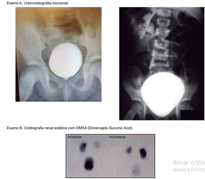
A Não há risco; realizar consultas anuais em pediatria geral com aferição da PA, cultura de urina e dosagem da uréia sérica.
B Não há risco; avaliar história de disfunção vesical, orientar medidas de mudanças no estilo de vida e realizar consultas em Pediatria Geral.
C Há risco; avaliar história de disfunção vesical, aferir PA e seguimento com especialista com culturas de urina, dosagem creatinina sérica e albuminúria.
D Há risco; seguimento com especialista e avaliar peso e estatura, aferir PA, cultura de urina, dosagem da uréia sérica e
Questão 11 · Endocrinologia · 4000182988De acordo com o protocolo clínico e diretrizes terapêuticas de investigação e tratamento do hipotireoidismo congênito do Ministério da Saúde publicada em 2021, assinale a alternativa correta.
A A dosagem de TSH e T4 livre deve ser feita em todos recém-nascidos após 24 horas de vida.
B Coletas após 72 horas de vida, uso de glicocorticoides pela mãe e transfusão de hemoderivados são as principais causas de resultados falso-positivos.
C O tratamento deve ser iniciado precocemente (a partir da quarta semana de vida) com o objetivo de evitar as complicações da doença como o retardo mental.
D Além da coleta em papel-filtro, crianças prematuras extremas ou com muito baixo peso devem ser reavaliadas com 1 mês de vida ou na alta hospitalar.
Questão 12 · Cirurgia · 4000182987Menina obesa de 11 anos apresenta dor epigástrica intensa no quadrante superior direito que ocasionalmente irradia para o anco direito e para as costas, 2 horas após uma grande refeição. Exame físico: anictérica, afebril, dor à palpação d o quadrante superior direito do abdome. Exames laboratoriais: alanina aminotransferase 44 U/L; aspartato aminotransferase 25 U/L; bilirrubina total 1,3 mg/dL; fosfatase alcalina 100 U/L; glóbulos brancos 14.500 mm³; amilase 67 U/L; lipase 55 U/L. US abdominal: espessamento da parede da vesícula biliar e sombreamento acústico posterior. O diagnóstico provável é
A pancreatite aguda.
B colecistite aguda.
C coledocolitíase.
D colangite.
Questão 13 · Estenose Hipertróf ica do Piloro · Pediatria · 4000182986Sobre a estenose hipertrófica do piloro, é correto afirmar que
A os pacientes apresentam vômitos biliosos.
B o US abdominal apresenta alta sensibilidade diagnóstica.
C o tratamento cirúrgico é uma emergência.
D a correção do distúrbio hidreletrolítico é realizada na fase pós-operatória.
Questão 14 · Pneumologia · Máscara de Venturi · 4000182985Quanto à administração de oxigênio em casos de insuficiência respiratória aguda, assinale a alternativa correta.
A Na máscara venturi a concentração de oxigênio é definida por adaptadores codificados por cores ou por entrada de ar conectada a cartucho de umidificação.
B As campânulas de Hood (halo de oxigênio) devem ser utilizadas com fluxo máximo de oxigênio de 5 litros/min.
C As máscaras simples fornecem altas concentrações de oxigênio quando utilizadas com fluxos acima de 15 litros/min.
D O cateter nasal de alto fluxo aquecido e umidificado é útil para oferecer ventilação não invasiva com dois níveis de pressão.
Questão 15 · Diagnóstico dos linf omas clínico laboratorial citogenética e biologia molecular · 4000182984Adolescente de 14 anos, com história de linfonodomegalia há 3 meses, em região de pescoço e de crescimento progressivo, associada a febre e perda de 15% de seu peso. Exame físico: linfonodos palpáveis em região cervical baixa e supraclavicular com cerca de 5 cm de diâmetro, indolor a palpação e endurecido. A conduta adequada é:
A antibioticoterapia e seguimento clínico.
B observação clínica e reavaliação em 15 dias.
C biópsia excisional do linfonodo e estudo histopatológico.
D hemograma e biópsia de medula óssea.
Questão 16 · Pediatria · Arritmias · 4000182983Menino de 1 ano, assintomático é encaminhado para avaliação cardiológica devido a alteração detectada na ausculta cardíaca. Eletrocardiograma (imagem). O paciente apresenta:
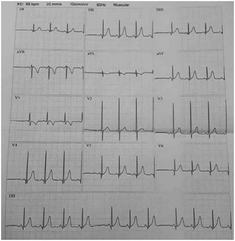
A arritmia sinusal.
B ritmo sinusal alternando com ritmo atrial ectópico.
C extrassístoles supraventriculares.
D extrassístoles ventriculares.
Questão 17 · Mielomeningocele e def eitos de f echamento posterior do tubo neural · 4000182982Menina de 8 anos, apresenta dor nos membros inferiores e di culdade de marcha há 8 meses. Eventualmente, também apresenta escapes urinários. AP: nascida com meningocele e operada no primeiro dia de vida, sem intercorrências, com bom desenvolvimento neuropsicomotor. A hipótese diagnóstica atual é:
A hidrocefalia.
B síndrome da medula presa.
C síndrome de Chiari II.
D espondilite anquilosante.
Questão 18 · Of talmologia · 4000182981Menino de 8 anos refere que bateu algo no olho esquerdo em um arame e sentiu correr uma “água quente”. Exame ocular: não realizado devido ao blefaro-espasmo à esquerda. A conduta a ser realizada para encaminhar o paciente é:
A Jejum, colírio e pomada de antibiótico, curativo compressivo e estudo da profilaxia antitetânica.
B Jejum, curativo oclusivo, repouso e avaliar profilaxia antitetânica.
C Dieta livre, pois provavelmente trata-se de abrasão corneana superficial.
D Jejum, colírio de antibiótico de hora em hora sem necessidade de curativo, avaliar profilaxia antitetânica.
Questão 19 · Hemorragia intracraniana · 4000182980Recém-nascido, de 28 semanas, apresentou di culdade respiratória grave e evoluiu para óbito após 6 dias. AP: parto normal, trabalho de parto prematuro. Exame pós-morte: imagem. O diagnóstico e o mecanismo envolvido no desenvolvimento dessa lesão são, respectivamente:
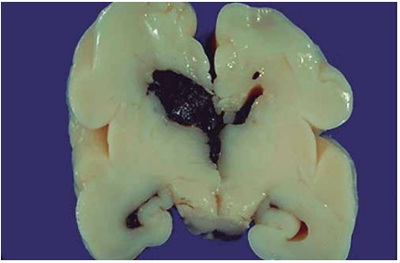
A hemorragia intraparenquimatosa; tocotraumatismo.
B hematoma ventricular; coagulação intravascular disseminada.
C hematoma intraparenquimatoso; sepse.
D hemorragia de matriz germinativa; fragilidade de vasos subependimários.
Questão 20 · Reumatologia · 4000182979A melhor opção terapêutica para menina de 5 anos com dor em membros, noturna e benigna (dor de crescimento) é
A analgésicos e anti-inflamatórios.
B calor local, massagem e analgésicos.
C calor local, massagem e anti-inflamatórios.
D massagem, analgésicos e anti-inflamatórios.
Questão 21 · Diabetes na gestação DMG · Obstetrícia · 4000182978Tercigesta de 36 anos inicia acompanhamento pré-natal com 8 semanas. AP: G3P2C0, macrossomia fetal (4.068g) na segunda gestação. Exame físico: IMC 30,2 Kg/m². Glicemia de jejum (primeiro trimestre): 88 mg/dL. Nesse momento, o resultado do rastreamento do diabetes mellitus gestacional e a conduta são
A negativo; GTT 75g entre 24 e 28 semanas.
B positivo; GTT 100g entre 24 e 28 semanas.
C positivo; tratamento com dieta e atividade física.
D negativo; nova glicemia de jejum a partir da 32ª semana.
Questão 22 · Hemorragias pós parto HPP e rotura uterina · Obstetrícia · 4000182976Puérpera de 28 anos apresenta sangramento uterino em grande quantidade, quarenta minutos pós-parto vaginal se m intercorrências. AP: diabetes gestacional, polidrâmnio e feto GIG. Exame físico: FC 110 bpm, PA 100x60 mmHg, útero com tônus diminuído. O índice de choque, o principal fator de risco para hemorragia pós-parto e o tratamento inicial recomendado são, respectivamente:
A 1,83; diabetes gestacional; infusão de metilergometrina.
B 1,1; sobredistensão uterina; infusão de ocitocina + ácido tranexâmico.
C 1,83; sobredistensão uterina; infusão de ocitocina + misoprostol.
D 1,1; diabetes gestacional; infusão de ocitocina + ácido tranexâmico.
Questão 23 · Distúrbios hipertensivos na gestação DHEG · Obstetrícia · 4000182973Primigesta na 35ª semana de gestação refere há dois dias dor de cabeça que não melhora com analgésico, há um dia enxerga pontinhos brilhantes e apresenta dor de estômago acompanhada de enjoo. Exame físico: BEG, hidratada, corada, PA 150x110 mmHg e edema de membros inferiores (2/4+). Feto em apresentação cefálica e vivo (FCF 140 bpm). A melhor conduta imediata é
A fenitoína e metildopa.
B benzodiazepínico e hidralazina intravenosa.
C sulfato de magnésio e hidralazina intravenosa.
D sulfato de magnésio e inibidor de enzima conversora de angiotensina.
Questão 24 · Obstetrícia · Imunizaçao na gestação · 4000182971Durante a assistência pré-natal de baixo risco de gestante com 20 semanas, o resultado do AgHBs (antígeno de superfície do vírus da hepatite B) foi não reagente e em sua carteira de vacinação não há registro de vacina contra hepatite B. A conduta em relação a essa imunização é
A iniciar esquema de vacinação.
B orientar vacinação no terceiro trimestre.
C orientar vacinação no puerpério.
D contra-indicar vacinação na gestação.
Questão 25 · Obstetrícia · Sangramento primeira metade · 4000182969Secundigesta com 8 semanas de gestação comparece para consulta pré-natal em unidade básica de saúde, referindo há um dia dor tipo cólica em baixo ventre, acompanhada de sangramento vivo em pouca quantidade. A conduta correta é
A prescrever progesterona micronisada, devido a possibilidade de abortamento inevitável.
B encaminhar a paciente para uma unidade de atendimento terciário, pois trata-se de abortamento.
C solicitar ultrassom, pois é a única forma de estabelecer a hipótese diagnóstica nesse momento.
D realizar exame ginecológico, pois pode ser suficiente para estabelecer a hipótese diagnóstica e orientar a paciente.
Questão 26 · Descolamento prematuro de placenta DPP · Obstetrícia · 4000182967Gestante de 33 anos com 36 semanas refere dor em baixo ventre há duas horas. AP: G3P1A1. Exame físico: P A 140x100mmHg, FC 96bpm, dinâmica uterina com 5 contrações de 40 segundos em 10 minutos, BCF 164 bpm. Toque vaginal: colo médio, medianizado, dilatado 3cm, bolsa íntegra. Durante a avaliação a paciente apresenta aumento súbito da dor, seguido de sangramento vaginal escuro, em moderada quantidade e di culdade para ausculta dos batimentos fetais. A hipótese diagnóstica e a conduta são:
A descolamento prematuro de placenta; rotura imediata da bolsa para reduzir a formação do coágulo retroplacentário e parto cesáreo de emergência.
B trabalho de parto taquitócico; analgesia de trabalho de parto para reduzir a dinâmica uterina.
C trabalho de parto taquitócico; rotura da bolsa para reduzir a dinâmica uterina e melhorar o fluxo útero-placentário.
D placenta prévia sem diagnóstico com sangramento decorrente do exame de toque vaginal; ultrassonografia de urgência para confirmação diagnóstica.
Questão 27 · Toxoplasmose na gestação · Obstetrícia · 4000182965Durante consulta de pré-natal na atenção primária, gestante apresenta os seguintes resultados de sorologia para toxoplasmose: As condutas corretas são:
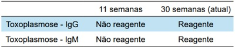
A espiramicina; encaminhar para a referência para realizar amniocentese.
B sulfadiazina, pirimetamina e ácido folínico; encaminhar para a referência para realizar amniocentese.
C espiramicina; não há necessidade de realizar a amniocentese.
D sulfadiazina, pirimetamina e ácido folínico; não há necessidade de realizar a amniocentese.
Questão 28 · Trabalho de parto prematuro TPP · Obstetrícia · 4000182962Primigesta de 19 anos, com idade gestacional de 32 semanas e 4 dias, apresenta dor em baixo ventre. Exame obstétrico: três contrações a cada 10 minutos, feto longitudinal e cefálico, BCF 148 bpm, colo uterino medianizado, esvaecido 50%, com dilatação de 4 cm e bolsa amniótica íntegra. A conduta correta é prescrever:
A corticoide, tocolítico, sulfato de magnésio e antibioticoprofilaxia para estreptococo do grupo B.
B tocolítico, sulfato de magnésio e antibioticoprofilaxia para estreptococo do grupo B.
C corticoide, tocolítico e antibioticoprofilaxia para estreptococo do grupo B.
D corticoide, tocolítico e sulfato de magnésio.
Questão 29 · Obstetrícia · Assistência ao parto normal · 4000182961Parturiente, com idade gestacional de 38 semanas, encontra-se no período expulsivo há 30 minutos, bolsa rota espontânea no início do trabalho de parto. AP: dois partos vaginais. Exame obstétrico: altura uterina 35cm, BCF 155bpm, dinâmica uterina 4 contrações (30”/30”/45”/45”), variedade da posição em occipício esquerda anterior, altura da apresentação +2 do plano De Lee. A conduta é
A aguardar evolução do parto.
B administrar ocitocina.
C indicar cesareana.
D indicar uso de vácuo extrator.
Questão 30 · Restrição de crescimento f etal RCF · Obstetrícia · 4000182960Primigesta na 35ª semana de gravidez, apresenta curva de altura uterina estacionada. Ultrassonogra a com Doppler: feto com peso no percentil 8, líquido amniótico normal, índice de pulsatibilidade menor que o percentil 95 na artéria umbilical e acima do percentil 5 na artéria cerebral média. O diagnóstico mais provável é
A restrição de crescimento fetal tardio.
B restrição de crescimento fetal precoce.
C pequeno para idade gestacional.
D crescimento fetal adequado.
Questão 31 · Câncer de colo do útero · 4000182959Mulher de 49 anos foi submetida à histerectomia devido a dor no baixo ventre e identi cação de massa pélvica. Exame macroscópico da peça cirúrgica: imagem. As características macroscópicas da imagem favorecem o diagnóstico de:
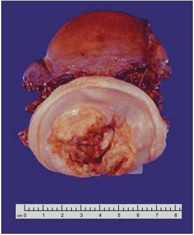
A doença inflamatória pélvica com cicatrizes extensas.
B teratoma adulto benigno com áreas de necrose.
C cistos de Naboth com infecções recorrentes.
D câncer avançado do colo do útero.
Questão 32 · Tratamento · 4000182957Mulher de 35 anos, sem desejo reprodutivo, apresenta disquesia e dismenorreia incapacitante cíclicas, com controle álgico apropriado em vigência de tratamento medicamentoso. US transvaginal com preparo intestinal: nódulo de 1 cm em ligamento útero-sacro esquerdo acometendo camada serosa da parede do retossigmoide. De acordo com o ECO sistema para abordagem de pacientes com endometriose, é indicado tratamento
A cirúrgico em serviço disponível.
B clínico em atenção primária.
C clínico em serviço de referência.
D cirúrgico em serviço de referência.
Questão 33 · Ginecologia · Estadiamento · Tratamento · 4000182956Mulher de 62 anos apresenta dor hipogástrica associada a sintomas dispépticos há 06 meses. AP: G0P0. US abdome total: grande massa heterogênea de provável origem anexial, apresentando septos e áreas sólidas associadas a uxo ao Doppler, com implantes sugestivos de acometimento secundário em andar superior, provável acometimento do fígado e alças intestinais,
A aparotomia exploradora para estadiamento e ressecção tumoral.
B laparoscopia exploradora para estadiamento e biópsia da lesão.
C laparotomia para ressecção tumoral seguida de quimioterapia.
D radioterapia e quimioterapia exclusivas.
Questão 34 · Ginecologia · Síndrome de Rokitansky · 4000182955Paciente de 16 anos e 5 meses, 1,65m, queixa-se de nunca ter menstruado. Exame físico: mamas em estágio 4 e pêlos pubianos em estágio 5 de Marshall e Tanner, cariótipo XX. A síndrome mais provável e os ductos envolvidos nesse defeito são:
A Rokitansky; paramesonéfricos.
B insensibilidade androgênica; paramesonéfricos.
C Ashermann; mesonéfricos.
D Swyer; mesonéfricos.
Questão 35 · Fisiopatologia · 4000182954Mulher de 24 anos, assintomática, tem diagnóstico de síndrome dos ovários policísticos. Exame físico: IMC 29,8 Kg/m², PA 120x85 mmHg, circunferência da cintura 89 cm. Os riscos metabólicos e reprodutivos relacionados a doença são:
A apneia do sono, hipertensão arterial e incompetência istmo cervical.
B apneia do sono, pré-diabetes e pré-eclâmpsia.
C dislipidemia, neoplasia de colo de útero e diabetes gestacional.
D esteatose hepática não alcoólica, câncer de endométrio e vaginose citolítica durante a gestação.
Questão 36 · Quadro clínico · 4000182953Mulher de 55 anos notou nodulação em mama direita há 2 meses. Exame físico: nódulo endurecido de difícil delimitação com o tecido adjacente de 3 cm no quadrante superolateral da mama direita. Assinale a alternativa correta.
A Deve-se solicitar mamografia e aguardar o resultado para definir a conduta.
B Deve-se indicar biópsia do nódulo, de preferência guiada por ultrassonografia.
C O exame de ressonância das mamas é o mais indicado.
D O exame clínico é característico de cisto mamário.
Questão 37 · Ginecologia · Ciclo menstrual · 4000182952A respeito da fisiologia normal do ciclo menstrual, é correto afirmar que:
A o hipotálamo secreta o hormônio liberador de gonadotrofina (GnRH) que regula a liberação do hormônio folículo estimulante (FSH), que libera o hormônio luteizante (LH).
B no início de cada ciclo menstrual os níveis de esteróides gonadais são altos e vêm aumentando desde o final da fase lútea do ciclo anterior.
C o recrutamento inicial e o crescimento dos folículos primordiais são independentes da gonadotrofinas.
D o LH estimula a aromatização nas células da teca.
Questão 38 · Complicações · Ginecologia · Tratamento · 4000182951Em relação ao abscesso tubo-ovariano, é correto afirmar que:
A o tratamento cirúrgico é mandatório e emergencial para as pacientes sépticas, com abscessos rotos ou naqueles com diâmetros acima de 10 centímetros.
B o tratamento ambulatorial pode ser considerado nas pacientes com boa compreensão do tratamento e que estejam em bom estado geral, desde que o maior diâmetro do abscesso seja inferior a 5 cm.
C a ausência de melhora clínica após 48 horas de antibioticoterapia parenteral pode ser manejada com leucograma seriado, PCR e VHS diários, além de curva térmica.
D o principal agente etiológico envolvido nesses quadros é o Actinomyces israelli.
Questão 39 · Ginecologia · Terapia hormonal · 4000182950Mulher de 51 anos queixa-se de diminuição da lubri cação e ardência vaginal no ato sexual há 2 anos. No último ano, sente- se mais triste, sozinha e “esquecida” para atividades do dia a dia. AP: DUM há 1 ano e 6 meses, HAS, tabagista. AF: mãe falecida por câncer de mama. Assinale a alternativa correta.
A Terapia hormonal (TH) sistêmica está indicada para melhora dos sintomas vaginais e sistêmicos.
B Há contraindicação absoluta ao uso de TH sistêmica.
C Terapia não hormonal com antidepressivos é a opção mais segura para o alívio dos sintomas climatéricos.
D TH vaginal está indicada para alívio dos sintomas vaginais.
Questão 40 · Anticoncepção em condições especiais · 4000182949Mulher de 15 anos comparece a Unidade Básica de Saúde, pois deseja iniciar um método anticoncepcional. AP: menarca aos 11 anos, sexarca há 1 ano, DUM há 2 dias. Nega comorbidades, tabagismo ou etilismo. Assinale a alternativa correta.
A Pedir para retornar com um responsável legal, pois a orientação e prescrição de métodos contraceptivos para menores de idade necessita da autorização ou ciência dos pais ou responsáveis.
B Todos os métodos contraceptivos podem ser usados, cabe ao profissional explicar sobre cada um para que a paciente possa escolher.
C Devido a idade a melhor alternativa seria o método de barreira, evitando possíveis alterações hormonais sobre a puberdade.
D O DIU está contraindicado pela idade precoce.
Questão 41 · Tratamento da emergência hipertensiva em situações especiais · Def inição · Cardiologia · 4000182947Com relação às urgências e emergências hipertensivas de acordo com as diretrizes brasileiras de hipertensão, assinale a correta.
A A hipertensão acelerada é a hipertensão diastólica grave (geralmente >120 mmHg) na presença de retinopatia hipertensiva grau III.
B A hipertensão acelerada com retinopatia hipertensiva grau III é considerada uma urgência hipertensiva, com necessidade da redução da PA em poucos minutos.
C A urgência hipertensiva se refere às condições clínicas nas quais a hipertensão grave deve ser reduzida em minutos ou poucas horas.
D São emergências hipertensivas: falência ventricular esquerda aguda, hemorragia intracerebral, crise de feocromocitoma, abuso de drogas e eclampsia.
Questão 42 · Endocrinologia · 4000182944Sobre a doença renal do diabetes (DRD) e seu tratamento, assinale a correta.
A A DRD é um processo multifatorial, que envolve associação entre lesão mecânica, disfunção celular e fibrose. A albuminúria não se correlaciona com o risco cardiovascular, sendo unicamente um marcador fisiopatológico.
B O tratamento da DRD envolve redução de risco cardiovascular, controle da glicemia e da PA e bloqueio do sistema renina angiotensina-aldosterona (SRAA) com o objetivo de reduzir a pressão intraglomerular.
C A metformina não pode ser usada se houver alteração de função renal em qualquer grau e os inibidores do SGLT- 2 restabelecem o feedback túbulo-glomerular com consequente redução da pressão intraglomerular.
D O mecanismo de ação das medicações que bloqueiam o SRAA está na vasodilatação da arteríola aferente e vasoconstrição da arteríola eferente, culminando na redução da pressão intraglomerular.
Questão 43 · Reumatologia · 4000182941Mulher de 24 anos apresenta aftas orais indolores, recorrentes há 6 meses. Há 4 meses apresenta artralgia de interfalangeanas proximais da mão direita e punho esquerdo com calor, rubor, aumento de volume, piora ao repouso, melhora ao movimento e rigidez matinal de 1 hora. Há 7 dias as artralgias das mãos e dos punhos desapareceram, mas surgiram no joelho direito e tornozelo esquerdo com as mesmas características. Evoluiu com hematomas nas coxas e sangramentos espontâneos de mucosa nasal e gengival. EF: ausência de artrite ou deformidades. Os exames complementares a solicitar e a provável etiologia são, respectivamente.
A hemograma, coagulograma, dosagem do fator VIII, provas inflamatórias (PCR e VHS); Hemofilia Primária.
B látex (fator reumatoide), provas inflamatórias (VHS e PCR), radiografias de mãos; Artrite Reumatoide.
C FAN, hemograma, urina tipo I, proteinúria 24 h, complementos, anti-SM, anti-dsDNA, anticardiolipinas, anticoagulante Iúpico; Lúpus Eritematoso Sistêmico.
D dosagem de HLA-B27, ressonância magnética de sacroilíacas, provas inflamatórias (PCR e VHS), radiografias de colunas e bacia; Espondiloartrite Axial não Radiográfica.
Questão 44 · Reumatologia · Avaliação dos pacientes com monoartrite · Artrite séptica · 4000182937Mulher de 65 anos, apresentou há 7 dias queda da própria altura com escoriação leve na região anterior de joelho esquerdo. Há 1 dia evoluiu com artralgia intensa, edema, rubor, calor, limitação de movimento e um pico febril (39 º C). Nega episódios prévios de artralgias. AP: diabética, hipertensa, etilista. Exame físico do joelho: rubor, calor, sinal da tecla presente, posição fletida com bloqueio articular. Exames laboratoriais: leucocitose sem desvio escalonado, PCR 30 mg/dL, VHS 60 mm/hora. A hipótese diagnóstica e conduta correta são:
A Artrite gotosa. A artrocentese diagnóstica não é necessária. Prescrever prednisona em dose baixa, AINE e colchicina por 10 dias. Após a crise, solicitar ácido úrico sérico e urinário e iniciar alopurinol.
B Artrite séptica. Realizar hemoculturas, artrocentese diagnóstica e análise do Iíquido sinovial com celularidade, culturas, Gram e cristais. Iniciar antibioticoterapia parenteral de largo espectro e, após confirmação, drenagem articular.
C Artrite séptica. Realizar artrocentese diagnóstica e na ausência de Iíquido macroscópico purulento está descartada a hipótese infecciosa. Alta com anti-inflamatórios e analgésicos.
D Artrite gotosa. Realizar artrocentese diagnóstica e análise do líquido sinovial com celularidade, culturas, Gram e cristais. Cultura do líquido sinovial negativa exclui o diagnóstico infeccioso. Alta com AINE, colchicina e alopurinol.
Questão 45 · Complicações da cirrose · Tratamento da cirrose · Manif estações clínicas · 4000182934Homem de 62 anos com cirrose hepática por álcool é admitido no hospital pela terceira vez em um mês com ascite tensa. Faz dieta com restrição de sódio. AP: encefalopatia hepática persistente. Uso diário de furosemida 160 mg e espironolactona 400 mg. Exames laboratoriais: Na 135 mEq/L e K 4,2 mEq/L; Na urinário baixo (40 mmol/dia). A conduta inicial é
A administrar furosemida intravenosa.
B realizar paracentese de alívio e adicionar amilorida.
C indicar shunt intra-hepático portossistêmico por via transjugular.
D realizar paracentese de alívio e se necessário repor albumina intravenosa.
Questão 46 · Hepatologia · Complicações da cirrose · Hemorragia Digestiva Alta Varicosa HDA Varicosa · 4000182932Homem de 50 anos é trazido ao hospital após dois episódios de vômitos com sangue e perda da consciência. Chega sonolento e não colaborativo e tem novo episódio de hematêmese, bem como melena. AP: etilista de mais de 100g de álcool há 30 anos. EF: FC 128 bpm, PA 70/50 mmHg, icterícia, ginecomastia e ascite tensa. Deve-se
A acionar imediatamente a equipe de endoscopia para Endoscopia Digestiva Alta (EDA).
B iniciar infusão de cristaloide, pedir EDA urgente e aguardar confirmação de rotura de varizes esofágicas para iniciar vasoconstritor.
C iniciar infusão de cristaloide, fazer dose de ataque de vasoconstritor e começar antibiótico.
D passar balão gastroesofágico imediatamente para controle do choque hemorrágico.
Questão 47 · Pneumologia · Asma · 4000182930Homem 32 anos com histórico de tosse e chiado na infância com necessidade de inalações com broncodilatadores. Em consulta ambulatorial refere sintomas de tosse e chiado que ocorrem 1 a 2 vezes no mês, nega despertar noturno po r sintoma, nega limitação de atividades do dia a dia, desde a infância não precisa procurar atendimento médico por crise, ultimamente tem feito treinos de corrida quando apresenta chiado e tosse seca leves. De acordo com as recomendações atuais para tratamento de asma, a melhor orientação terapêutica nesse caso é:
A Salbutamol spray 2 jatos 30 min antes do exercício e caso tenha sintomas.
B Formoterol 6 mcg / budesonida 200 mcg spray 1 jato 30 min antes do exercício e caso tenha sintomas.
C Formoterol 6 mcg / budesonida 200 mcg spray 1 jato de 12/12h diariamente.
D Não necessita tratamento medicamentoso.
Questão 48 · Doença Pulmonar Obstrutiva Crônica DPOC · Pneumologia · 4000182927Homem de 61 anos retorna em consulta ambulatorial com queixa de dispneia aos moderados esforços e pouca tosse seca. Relata exacerbação do quadro há 2 meses com necessidade de internação por 1 semana. Atualmente sem suplementação de oxigênio. AP: tabagismo prévio de 30 anos-maço. Em uso regular de formoterol 12 mcg de 12/12h. Espirometria (valores após broncodilatador): VEF1/CVF = 62 e VEF1 = 49%. A melhor conduta é
A manter monoterapia com formoterol 12 mcg de 12/12h.
B associar budesonida 400 mcg de 12/12h.
C associar tiotrópio 2,5 mcg 2 jatos 1 vez ao dia.
D associar salbutamol spray 2 jatos na crise.
Questão 49 · Introdução à hemólise · 4000182923Mulher de 24 anos apresenta cansaço, fraqueza e taquicardia aos mínimos esforços há 2 dias. EF: FC 110 bpm, FR 18 ipm, PA 100/60mmHg, mucosas descoradas, baço palpável sobre o rebordo costal direito, aftas orais. Exames laboratoriais: Hb 5,7 g/dL, Ht 22%, VCM 108 fL, plaquetas 212.000/mm³, GB 4.800/mm³ com diferenciais normais, reticulócitos 5,6%, BT 4,5 mg/dL, BI 3,8 mg/dL, DHL 4 vezes o valor de normalidade, Cr 0,6 mg/dL. O exame que auxiliará no diagnóstico é a(o)
A teste da antiglobulina direta.
B imunofenotipagem de sangue periférico.
C dosagem de vitamina B12.
D eletroforese de hemoglobina.
Questão 50 · Demências · Neurologia · Avaliação Cognitiva · 4000182920Sobre o diagnóstico das queixas cognitivas em idosos, é correto afirmar que
A o diagnóstico de demência exige a presença de prejuízo de memória.
B pacientes com comprometimento cognitivo leve não possuem prejuízo funcional ou social claro como aqueles com demência.
C o diagnóstico de demência requer um exame de neuroimagem (TC ou RNM).
D a pesquisa de sorologia para HIV faz parte dos exames de rotina.
Questão 51 · Neurologia · Síndrome da Fragilidade · 4000182918Em relação aos instrumentos utilizados para o diagnóstico da síndrome de fragilidade, assinale a alternativa correta.
A O instrumento SOF (
B O instrumento FRAIL incorpora a avaliação da força de preensão palmar.
C O instrumento FRAIL incorpora a avaliação do índice de massa corporal.
D O instrumento SOF incorpora a avaliação da força dos membros inferiores através do teste de levantar da cadeira 5 vezes sem usar os braços para apoio.
Questão 52 · Inf ectologia · Sepse · Choque séptico · 4000182917Mulher de 42 anos iniciou disúria há 4 dias, apresenta febre com dor lombar há um dia e hoje prostração intensa, sendo levada ao PS. EF: regular estado geral, sonolenta (Glasgow 11), PA 75/50 mmHg, FC 135 bpm, SatO₂ 93%, FR 26 ipm, tempo de enchimento capilar de 5 segundos. Sobre a abordagem desse caso na emergência, além da ressuscitação volêmica e noradrenalina, assinale a correta.
A Deve-se iniciar a dobutamina na dose intermediária, visando o efeito alfa e beta-adrenérgico concomitante.
B Recomenda-se que a administração de antibiótico empírico deve ser idealmente realizada dentro de 1 hora do reconhecimento clínico.
C O escore
D Caso disponível, recomenda-se fortemente a dosagem de procalcitonina para decidir quanto ao início de antibiótico.
Questão 53 · Endocrinologia · 4000182916Homem de 65 anos é encontrado caído no chão da sua casa. Segundo o lho, o paciente tinha boa funcionalidade prévia e morava só. AP: HAS há 15 anos e DM há 10 anos, sem acompanhamento regular, em uso de clortalidona 25mg/dia, metformina 1500mg/dia e empagli ozina 25mg/dia. EF: torporoso (escala de coma de Glasgow 9), desidratado 3+/4, PA 98/66 mmHg, FC 128 bpm, FR 26 ipm, SatO2 95%, tempo de enchimento capilar 3 segundos. Exames laboratoriais: Hb 16 g/dL, Ht 51%, GB 14.000/mm³, Plaquetas 380.000/mm³, Na 153 mEq/L, K 5,0 mEq/L, glicose 660 mg/dL, Cr 2,5 mg/dL (basal 0,7 mg/dL), Ur 245 mg/dL, PCR 1,4 mg/dL. Gasometria arterial: pH: 7,57; pCO₂ : 36 mmHg; Bic: 32 mEq/L; cloreto: 96 mEq/L, lactato 1,8 mmol/L. Considerando a principal hipótese diagnóstica, o tratamento inicial é
A antibiótico de amplo espectro.
B terapia renal substitutiva.
C cristaloide intravenoso.
D água livre via enteral.
Questão 54 · Inf ectologia · 4000182915Considerando pacientes elegíveis à pro laxia antimicrobiana contra endocardite infecciosa antes da realização de procedimentos dentários de alto risco, assinale a alternativa que apresenta a droga de escolha.
A Ciprofloxacino.
B Claritromicina.
C Metronidazol.
D Amoxicilina.
Questão 55 · Anticoagulantes · Antiplaquetários · Cardiologia · 4000182914Sobre o tratamento antitrombótico preconizado pela diretriz brasileira de síndrome coronária aguda sem supradesnivelamento de segmento ST, assinale a correta.
A Nos raros casos de pacientes com hipersensibilidade ao ácido acetilsalicílico, para dupla antiagregação, recomenda-se a combinação de clopidogrel com ticagrelor, ou clopidogrel com prasugrel, todos sem dose de ataque.
B O período de tratamento com enoxaparina em dose plena é por 5 dias. Após esse período, caso o paciente permaneça internado, deve ser reduzida para dose profilática de tromboembolismo venoso.
C Não há indicação rotineira de se iniciar inibidor do receptor P2Y12 como pré-tratamento em pacientes indicados para estratégia invasiva precoce (< 24h).
D Caso disponível no serviço, deve-se dar preferência ao fondaparinux como anticoagulante de escolha em pacientes de baixo risco hemorrágico e disfunção renal com clearance de creatinina < 20mL/min.
Questão 56 · Tratamento f armacológico da insuf iciência cardíaca com f ração de ejeção intermediária · Cardiologia · 4000182913Considere um paciente com diagnóstico prévio de insu ciência cardíaca com fração de ejeção reduzida (ICFER) por cardiomiopatia dilatada. O paciente está em uso de medicações modi cadoras da doença ICFER (bisoprolol, valsartana e espironolactona), em doses máximas com boa tolerância e atualmente encontra-se sem edema e na classe funcional NYHA 1. Realizou um ecocardiograma recente que demonstrou recuperação da fração de ejeção do ventrículo esquerdo (prévio 32% e atual 52%), com hipocinesia anterior, sem demais alterações marcantes. Não apresenta diabetes ou hipertensão arterial sistêmica. Para esse caso, assinale a conduta correta.
A Mesmo com a recuperação da função sistólica e ausência de sintomas, recomenda-se a manutenção das medicações em uso.
B Devem ser reduzidas progressivamente a valsartana e a espironolactona até a suspensão, mas mantido o betabloqueador.
C A valsartana deve ser substituída por sacubitril/valsartana respeitando o intervalo de
D Como houve recuperação da disfunção sistólica, recomenda-se redução pela metade da valsartana e espironolactona, e introdução de inibidor de SGLT-2.
Questão 57 · Diagnóstico · Neurologia · Doença de Parkinson · 4000182912Homem de 60 anos apresenta há dois anos tremor no braço direito e di culdade para fazer os movimentos devido a rigidez, com piora progressiva. Queixa-se de dor no membro superior direito, perda de olfato e constipação intestinal. Acompanhante relatou que ele se movimenta muito e fala durante o sono. EF: leve bradicinesia, tremor de repouso e rigidez do lado direito (mais evidente no membro superior); hipomimia facial e anosmia; marcha com arrasto da perna direita e diminuição do balanço passivo do braço direito, sem instabilidade postural. É correto afirmar.
A Hipomimia facial, alteração da marcha, dor e hipotensão postural são classificados como sintomas não motores da doença.
B Os sintomas motores cardinais da doença de Parkinson apresentados pelo paciente são: rigidez unilateral ou assimétrica e bradicinesia.
C Esse paciente apresenta alguns sintomas não motores da doença de Parkinson, tais como: hipotensão postural, dor, anosmia, transtorno comportamental do sono REM.
D A constipação intestinal, o transtorno comportamental do sono REM e a anosmia são classificados como sintomas pré-motores da doença de Parkinson.
Questão 58 · Dermatologia · Herpes orolabial e corporal · 4000182911Homem de 39 anos, motorista de táxi, solteiro, refere dor do tipo queimação há 3 dias no glúteo direito com surgimento local de lesões cutâneas há 1 dia. Nega febre, linfadenopatia ou prostração. EF: múltiplas vesículas de conteúdo hialino e base eritematosa agrupadas apenas na região glútea à direita (imagem). A principal hipótese diagnóstica e o exame para a sua confirmação são, respectivamente:
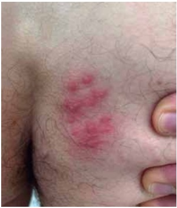
A herpes simples; citodiagnóstico de Tzanck.
B varíola do macaco; pesquisa viral pelo PCR da lesão.
C sífilis primária; pesquisa do treponema em campo escuro.
D molusco contagioso; exame histopatológico do material curetado.
Questão 59 · Inf ectologia · Tratamento · História natural da doença · 4000182910O gráfico a seguir mostra a história natural da infecção pelo HIV: Fase 1: contágio (infecção); fase 2: infecção aguda; fase 3: latência clínica; fase 4: aids – doença avançada. O melhor momento para introdução do tratamento antirretroviral é na fase
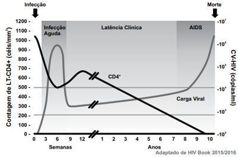
A 1.
B 2.
C 3.
D 4.
Questão 60 · Hanseníase dimorf a · Hanseníase indeterminada · Hanseníase virchowiana · 4000182909Mulher de 45 anos refere surgimento de mancha hipocrômica na bochecha direita com 4 cm de diâmetro, assintomática, há 6 meses. EF: mácula hipocrômica na face e lesão semelhante na região lombar, na qual esta apresenta redução de pelos. A forma clínica de hanseníase desse caso é a
A indeterminada.
B tuberculoide.
C lepromatosa.
D dimorfa.
Questão 61 · Tratamento · 4000182908Homem de 19 anos foi submetido a orquiectomia radical direita por via inguinal devido massa testicular direita. No primeiro retorno ambulatorial queixou-se de parestesia em face medial da coxa e bolsa testicular à direita. O nervo provavelmente lesado durante a cirurgia foi o
A genitofemoral.
B obturador.
C femoral.
D ilioinguinal.
Questão 62 · Tratamento · Tratamento Cirúrgico · 4000182907Homem de 65 anos relata piora gradual do jato miccional nos últimos meses, acompanhada de hesitação para iniciar micção e necessidade de prensa abdominal para ajudar no esvaziamento vesical. Apresentou três episódios de retenção urinária aguda nos últimos quatro meses. AP: hiperplasia prostática benigna, em uso de doxazosina 2mg por dia. Exame digital retal da próstata: glândula de aproximadamente 50g, simétrica, broelástica, indolor e sem nódulos palpáveis. PSA (colhido há dois meses): 1,2ng/mL. A melhor proposta terapêutica é
A aumentar dose do alfabloqueador para 4mg por dia.
B ressecção transuretral de próstata.
C associar medicação inibidora da 5-alfa-redutase.
D instituir cateterismo intermitente limpo a cada quatro horas.
Questão 63 · Lesão da Árvore Traqueobrônquica · Pneumotórax Hipertensivo · 4000182906Homem de 37 anos colidiu seu automóvel contra um muro em alta velocidade. Durante o atendimento inicial foi diagnosticado um pneumotórax hipertensivo à direita, sendo realizada punção de alívio seguida por drenagem torácica. Dreno de tórax: pequeno débito hemático e grande escape aéreo. Após a drenagem torácica, o paciente evoluiu com en sema de subcutâneo que foi aumentando progressivamente. Rx de tórax realizado no PS após drenagem torácica: imagem. Dentre as condutas a seguir, a mais adequada nesse momento é a:
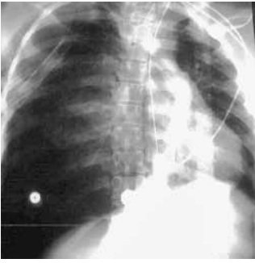
A colocação de segundo dreno torácico.
B realização de toracotomia exploradora.
C realocação do primeiro dreno torácico.
D realização de fisioterapia respiratória.
Questão 64 · Derrame Pleural · Inf ectologia · Análise do líquido pleural · 4000182905Mulher de 54 anos encontra-se no 4º dia de tratamento de pneumonia comunitária com antibiótico, mantendo febre, leucocitose e PCR elevada. AP: DM tipo II e ICC. Rx de tórax: imagem. Exames séricos: glicose: 120 mg/dL; DHL: 8 75 UI/L; proteína: 6,7 g/dL. Exames do líquido pleural de toracocentese diagnóstica: aspecto amarelado; pH: 7,21; glicose: 30 mg/dL; DHL: 1895 UI/L; proteína: 4,2 g/dL e cultura em andamento. A conduta mais adequada é:
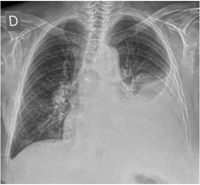
A aguardar cultura.
B broncoscopia flexível para coleta de lavado.
C drenagem torácica à esquerda.
D decorticação pulmonar.
Questão 65 · Laceração Aórtica · 4000182904O achado radiológico mais sugestivo de lesão traumática de aorta é:
A derrame extrapleural apical.
B pneumomediastino.
C pneumotórax à esquerda.
D hemotórax à direita.
Questão 66 · Anatomia Vascular do Trato Gastrointestinal · 4000182903Com relação à anatomia vascular abdominal, é correto afirmar que
A a veia cava inferior está localizada à esquerda da aorta.
B a artéria cística normalmente é ramo da artéria hepática comum.
C os ramos do tronco celíaco são: artéria esplênica, artéria gástrica direita e artéria hepática comum.
D a veia mesentérica inferior geralmente drena para a veia esplênica.
Questão 67 · Exames de Imagem · Exames Diagnósticos · Apresentação Clínica · 4000182902Homem de 76 anos apresenta icterícia progressiva, colúria e acolia fecal há 15 dias, associadas à inapetência e emagrecimento de 6 kg nesse período. Exame físico: ictérico 2+/4+. Hb 13,4 g/dl; Ht 38%; GB 9500/mm³; Plaquetas 220.000/mm³; TGO 121 U/L; TGP 96 U/L; FA 388 U/L; GGT 678 U/L; BT 12 mg/dl (BD = 9 mg/dl). US de abdome: dilatação de vias biliares intra e extra-hepáticas, sem evidência de fator obstrutivo. A melhor conduta a ser tomada é:
A colecistectomia videolaparoscópica com colangiografia intraoperatória.
B tomografia de abdome total com contraste.
C colangiopancreatografia retrógrada endoscópica.
D laparoscopia para biópsia hepática.
Questão 68 · Reparo laparoscópico · 4000182901Com relação às patologias herniárias de localização inguinocrural, é correto afirmar que
A nas mulheres, o tipo mais prevalente são as femorais.
B as técnicas laparoscópicas necessitam obrigatoriamente do uso de próteses.
C a técnica de Lichtenstein permite a correção das hérnias inguinais e crurais, com mínimo dano tecidual e sem tensão.
D nos casos de encarceramento, a abordagem inicial é preferencialmente por laparotomia.
Questão 69 · Diagnóstico · Tratamento · 4000182900Mulher de 32 anos queixa-se da presença de sangue vivo no papel higiênico após a evacuação, acompanhada por dor anal há 2 semanas. Exame proctológico: botão hemorroidário em parede lateral esquerda, com origem acima da linha pectínea, prolapsado pelo canal anal, não sendo possível redução manual. O diagnóstico da hemorroida e a melhor conduta são:
A externa trombosada; trombectomia.
B mista; ligadura elástica.
C interna grau IV; hemorroidectomia.
D interna grau III; hemorroidectomia.
Questão 70 · Comunicação interatrial · 4000182899Em relação à comunicação interatrial (CIA), é correto afirmar que:
A o tipo de maior ocorrência é o seio venoso, geralmente associado à drenagem anômala de veias pulmonares.
B o tipo de maior ocorrência é o ostium primum, relacionado com defeito da formação dos coxins endocárdicos.
C o tipo ostium secundum leva precocemente à hipertensão arterial pulmonar exigindo correção cirúrgica de urgência.
D no tipo ostium secundum, a CIA está localizada na lâmina da fossa oval.
Questão 71 · Of talmologia · 4000182898A manifestação ocular observada na imagem é característica de uma enfermidade osteometabólica com graves repercussões ortopédicas. A doença em questão é o(a):
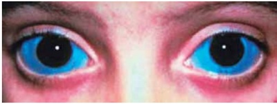
A raquitismo hipofosfatêmico.
B síndrome de Morquio.
C osteogênese imperfeita.
D osteodristrofia renal.
Questão 72 · Anestésicos Locais · Toxicidade · Farmacodinâmica · 4000182897Homem de 70 kg, será submetido a anestesia in ltrativa para exérese de pequeno lipoma em abdome. A dose máxima permitida de lidocaína que pode ser utilizada durante o procedimento é:
A 17,5 ml de lidocaína 2% sem vasoconstrictor.
B 30 ml de lidocaína 2% com vasoconstrictor.
C 21 ml de lidocaína 1% sem vasoconstrictor.
D 17,5 ml de lidocaína 2% com vasoconstrictor.
Questão 73 · Hemorragia Subaracnoidea HSA · Neurologia · Quadro Clínico · 4000182896Mulher de 70 anos, apresentou quadro súbito de cefaleia, vômitos e rebaixamento do nível de consciência há 4 horas. AP: tabagismo e hipertensão arterial descontrolada. Exame físico: mau estado geral, Glasgow 7, PA 170x100 mmHg, FC 80 bpm, FR 18 irpm. Realizada tomografia de crânio (a seguir). A conduta é:

A craniectomia descompressiva.
B terceiroventriculostomia endoscópica.
C derivação ventricular externa.
D manitol em bolus.
Questão 74 · Síndrome da Apneia Obstrutiva do Sono · 4000182895Sobre a apneia obstrutiva do sono, é correto afirmar que:
A são fatores de risco: sexo feminino, obesidade e idade acima de 40 anos.
B a prevalência estimada no Brasil é de 8-10 %.
C é considerada fator de risco independente para HAS, DM e síndrome metabólica.
D o tratamento com CPAP normaliza HAS noturna.
Questão 75 · Aneurismas Rotos · 4000182894Mulher de 74 anos, apresentou síncope após queixar-se de dor abdominal súbita em pontada, com irradiação dorsal. Exame físico: pressão arterial inaudível, perfusão periférica lenti cada, massa pulsátil no mesogastro facilmente palpável e abdome doloroso à palpação. A hipótese diagnóstica e a conduta são respectivamente:
A aneurisma de aorta roto; laparotomia exploradora.
B aneurisma de aorta com dor; angiotomografia e planejamento de abordagem endovascular.
C aneurisma de aorta roto; confirmação diagnóstica com angiotomografia e posterior laparotomia.
D aneurisma de aorta com dor; exames laboratoriais (função hepática, DHL, PCR), Rx abdome, ultrassonografia abdominal.
Questão 76 · Reumatologia · Arterite de Takayasu · 4000182893Mulher de 34 anos, refere dor e formigamento no membro superior esquerdo há cerca de 2 anos, principalmente ao esforço intenso. Não há limitação a atividades habituais ou surgimento de lesões espontâneas. AP: nega tabagismo e hipertensão. Exame físico: pulsos radial e ulnar palpáveis em membro superior direito, não palpáveis no esquerdo; dor e m antebraço esquerdo à elevação dos membros e manobras repetidas de preensão palmar; perfusão lenti cada em M SE em relação ao MSD; pulsos femorais, poplíteos, tibiais anteriores e posteriores palpáveis bilateralmente; ausência de edema em extremidades. A provável hipótese e a conduta são, respectivamente:
A Doença de Kawasaki; iniciar corticóide em altas doses e indicar internação hospitalar para realizar coronariografia.
B Tromboangeíte obliterante sem necrose; anticoagulação.
C Arterite de Takayasu; realizar desobstrução a fogarty.
D Arterite de Takayasu; tratamento medicamentoso e acompanhamento periódico.
Questão 77 · Anticoagulação · 4000182892Mulher de 68 anos, refere edema que se iniciou em membro inferior direito há 2 dias. Exame físico: dor à palpação e empastamento de panturrilha direita, 4cm de diferença na circunferência em relação à esquerda. Assinale a alternativa correta.
A O tratamento anticoagulante lisa o trombo e permite evitar síndrome pós-trombótica.
B O tratamento antiagregante é preferível à anticoagulação por evitar a progressão do trombo e consequente embolia.
C A varfarina é usada como ponte para estabilização do coágulo até o início de ação dos anticoagulantes de ação direta.
D A heparina é usada como anticoagulante até que a varfarina atinja seu nível terapêutico.
Questão 78 · Paraf imose · 4000182891Menino de 6 anos apresenta dor e edema no pênis há 4 horas, após mãe realizar “massagem para tratamento de mose” (sic). Exame físico: imagens. O diagnóstico é:
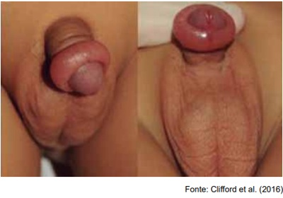
A fimose secundária.
B parafimose.
C balanopostite.
D hipospadia glandar.
Questão 79 · Tratamento · Diagnóstico · 4000182890Menino de 7 meses apresenta ausência de testículo direito na bolsa escrotal desde o nascimento. Exame físico: testículo esquerdo tópico, hemiescroto direito vazio e testículo direito palpável na região do canal inguinal direito. A conduta é:
A realizar orquidopexia direita em caráter eletivo, o mais breve possível.
B realizar ultrassonografia.
C expectante até os 2 anos de idade.
D expectante até os 4 anos de idade.
Questão 80 · Dermatologia · Tratamento · 4000182889Mulher de 43 anos, trabalhadora rural, apresenta lesão na face, que iniciou como uma descamação há cerca de 1 ano, que desde então vem crescendo e não dá sinais de cicatrizar. Relata que a lesão apresenta sangramentos ocasionais. Exame físico: pele, olhos e cabelos claros. Presença de lesão na região zigomática esquerda, de 1,7 cm de diâmetro, com bordas elevadas, ulceração central, coberta com crostas sobre secreção purulenta. A conduta correta é:
A antibioticoterapia sistêmica e retorno em 30 dias caso não haja melhora do quadro.
B biópsia excisional com margens.
C tratamento tópico com 5-fluorouracil por 3 meses e retorno para reavaliação.
D limpeza com água e sabonete 3x ao dia, pomada antibiótica e retorno caso não haja melhora do quadro.
Questão 82 · Medicina Preventiva · 4000182887A figura abaixo representa a ocorrência de casos de uma determinada doença em uma comunidade. Com base nessas informações, os coe cientes de incidência e prevalência dessa doença, durante o mês de maio de 2020, na referida comunidade, foram, respectivamente, de
A 10 e 14.
B 11 e 16.
C 11 e 14.
D 16 e 10.
Revisar: possível letra faltando em enunciado
Questão 83 · Medicina Preventiva · 4000182886Nos termos do Código de Ética Médica, o médico poderá revelar fato de que tenha conhecimento em virtude do exercício de sua profissão
A quando o paciente tenha falecido.
B quando o fato seja de conhecimento público.
C quando der seu depoimento como testemunha.
D por dever legal.
Questão 84 · Medicina Preventiva · 4000182885Dentre os princípios do Sistema Único de Saúde (SUS), mencionado no Artigo 7º da Lei Orgânica da Saúde (Lei 8.080/1990), está incluído o seguinte:
A financiamento com recursos da seguridade social, complementados pelos estados e municípios, dentro de suas possibilidades orçamentárias.
B atenção secundária como núcleo ordenador das redes regionais de serviços de saúde.
C centralização normativa (DIR - Diretoria Regional) e descentralização executiva (secretarias municipais) das ações de saúde.
D descentralização político-administrativa, com direção única em cada esfera de governo.
Questão 85 · Medicina Preventiva · 4000182884Nos termos da Lei nº 8142, de 28/12/1990, os conselhos de saúde, em caráter permanente e deliberativo, deverão ter suas decisões homologadas pelo
A chefe do poder legalmente constituído em cada esfera de governo.
B dirigente de saúde (ministro, secretário ou diretor, quando for o caso).
C poder legislativo em cada esfera de governo.
D Ministério Público.
Questão 86 · Medicina Preventiva · 4000182883Com relação ao texto a seguir, assinale a alternativa que completa corretamente a lacuna. “O Decreto nº 7.508/2011, que dispõe sobre a organização do SUS, estabelece em seu artigo 2º o seguinte: Rede de Atenção à Saúde - conjunto de ações e serviços de saúde articulados em níveis de complexidade crescente, com a finalidade de garantir a ____________ da assistência à saúde”.
A equidade
B integralidade
C universalidade
D regionalização
Questão 87 · Medicina Preventiva · 4000182882A organização da Atenção Básica à Saúde (Portaria nº 2436/2017, do Ministério da Saúde) inclui a oferta de cuidado, “reconhecendo as diferenças nas condições de vida e saúde e de acordo com as necessidades das pessoas, considerando que o direito à saúde passa pelas diferenciações sociais e deve atender à diversidade”. Esta orientação está associada ao seguinte princípio do SUS:
A equidade.
B integralidade.
C universalidade.
D controle social.
Questão 88 · Medicina Preventiva · 4000182881Num estudo publicado no nas eleições de 2018 foram os que apresentaram as piores taxas de mortalidade por covid-19, principalmente na segunda onda epidêmica de 2021, mesmo quando consideradas as desigualdades estruturais entre as cidades. Nesse estudo, o desfecho foi a taxa de mortalidade por covid-19 padronizada por idade, e o apoio ao candidato presidencial foi representado pelo percentual de eleitores de cada município que votaram nesse candidato. O desenho de estudo dessa pesquisa foi
A coorte retrospectiva.
B transversal.
C ecológico.
D descritivo.
Questão 89 · Medicina Preventiva · 4000182880O objetivo da randomização dos participantes em um ensaio clínico randomizado, duplo cego e placebo controlado é controle do
A viés de memória.
B efeito placebo.
C viés de atrito.
D confundimento.
Questão 90 · Medicina Preventiva · 4000182879Para saber se o consumo habitual da dieta mediterrânea está associada a um menor risco de acidente vascular cerebral (AVC), um grupo de 23.232 indivíduos foi selecionado. O grau de adesão à referida dieta foi verificado e os indivíduos foram seguidos por 17 anos para identificar casos novos de AVC. Trata-se de
A estudo transversal, pois a adesão à dieta mediterrânea é avaliada em um momento específico no tempo (no início do seguimento).
B ensaio clínico, porque pode orientar a prevenção na prática clínica.
C estudo de coorte, pois segue os sujeitos classificados de acordo com sua exposição para identificar o desenvolvimento de uma determinada doença.
D estudo ecológico, porque segue um grupo de sujeitos.
Questão 91 · Medicina Preventiva · 4000182878Um ensaio clínico de fase IV tem como objetivo
A estabelecer segurança, tolerabilidade e farmacocinética do produto.
B detectar novas reações adversas e confirmar a frequência das já conhecidas.
C determinar a relação risco/benefício a curto e longo prazo e o valor terapêutico do produto.
D estabelecer segurança, dose-resposta e eficácia do produto.
Questão 92 · Medicina Preventiva · 4000182877Entre 01 de janeiro e 31 de dezembro de 2020 ocorreram 180 acidentes fatais no trânsito em um determinado município. A medida de frequência de acidentes utilizada foi
A letalidade.
B prevalência pontual.
C prevalência no período.
D incidência.
Questão 93 · Medicina Preventiva · 4000182876Os casos de covid-19 que acometeram trabalhadores da saúde na vigência da pandemia envolvem
A aumento de risco associado a longas jornadas de trabalho, privação de sono e problemas no acesso a proteções individuais evoluindo com risco de
B contaminações acontecidas, predominantemente, em interações que não envolviam pacientes justificando que não sejam reconhecidas como relacionadas ao trabalho.
C procedimentos geradores de aerossóis em UTI acometendo a equipe de cuidados mesmo em situação de uso de EPI como máscara N95 e equivalentes.
D contaminações em contexto de transmissão comunitária em situações similares as dos casos que acometeram outras populações trabalhadoras de atividades emergenciais.
Questão 94 · Medicina Preventiva · 4000182875Antes da COP26 (26ª Conferência da ONU sobre Mudanças Climáticas), a carta aberta “Prescrição de Clima Saudável” fo i assinada por mais de dois terços dos pro ssionais da saúde em todo o mundo. Sobre os danos à saúde causados pelas mudanças climáticas, assinale a alternativa correta.
A Eventos climáticos extremos (ondas de calor, tempestades e inundações) devem ser responsabilidade dos gestores municipais e não dos serviços de saúde.
B Transtorno de estresse pós-traumático, ansiedade e depressão não pioraram com as mudanças climáticas, esses foram somente agravados pela pandemia do covid-19.
C A poluição do ar está levando a muitas doenças pulmonares e cardíacas, mas ainda não tem sido responsável por mortes prematuras.
D Os sistemas alimentares são cada vez mais perturbados pelo clima extremo que está exacerbando a insegurança alimentar, a fome e a desnutrição.
Questão 95 · Medicina Preventiva · 4000182874Homem de 58 anos, deu entrada em uma UPA, em estado grave (choque hemorrágico) e história de vômitos sanguinolentos. A família informou que o mesmo tinha “pressão alta, diabetes e era alcoolista”, que teve episódio semelhante há dois meses e na ocasião foi informado que tinha “varizes no estômago e cirrose”. Cerca de 20 minutos depois, o paciente veio a falecer a despeito dos tratamentos instituídos pelo médico plantonista. Assinale a alternativa correta:
A O preenchimento correto da Declaração de Óbito deve ser:
B O preenchimento correto da Declaração de Óbito deve ser:
C O preenchimento correto da Declaração de Óbito deve ser:
D Como o paciente permaneceu menos de 24 horas na UPA, a Declaração de Óbito deverá ser emitida pelo SVO (Serviço de Verificação de Óbito).
Questão 96 · Medicina Preventiva · 4000182873A figura a seguir apresenta a evolução (número de casos e óbitos) da covid-19 em dois países, desde o início da pandemia até 12 de janeiro de 2022, na vigência da variante Ômicron. Com relação à vacinação contra a covid-19 nos dois países e baseados nestes per s de ocorrência de casos e óbitos, é possível inferir que
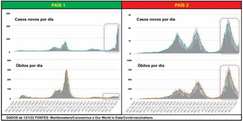
A as coberturas vacinais dos países 1 e 2 são, respectivamente, alta e baixa.
B as coberturas vacinais dos países 1 e 2 são, respectivamente, baixa e alta.
C nos países 1 e 2 foram aplicadas, respectivamente, vacinas de RNA mensageiro e vacinas de vírus inativado.
D não há elementos suficientes para se inferir a cobertura vacinal e tipo de vacina utilizada.
Questão 97 · Inf ectologia · 4000182872Homem de 50 anos, hipertenso, foi encontrado em óbito em sua residência. Na autópsia foram identi cadas lesões brancacentas no parênquima pulmonar (imagem) e em linfonodo hilar. O processo patológico que é classicamente descrito na doença causadora das lesões pulmonares é a necrose
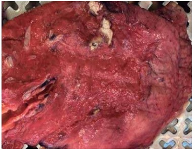
A coagulativa.
B liquefativa.
C caseosa.
D gangrenosa.
Questão 98 · Dermatologia · Manif estações clínicas · 4000182871Homem de 35 anos, morador de área rural, refere lesão intranasal com saída discreta de secreção hemática, pouco dolorosa, há 4 meses. AP: lesão ulcerada na região do queixo de 1,5 cm de diâmetro há três anos, com cicatrização espontânea após alguns meses. Exame físico: ulceração no septo nasal anterior. A principal hipótese diagnóstica é
A carcinoma espinocelular.
B tuberculose.
C cromomicose.
D leishmaniose tegumentar americana.
Questão 99 · COVID 19 · Inf ectologia · 4000182870Sobre as vacinas contra a covid-19, assinale a alternativa correta.
A A vacina da Janssen® em dose única é tão imunogênica e eficaz quanto aquela produzida pela Pfizer® (de duas doses).
B A efetividade da vacina AztraZeneca® se mantém estável por nove a doze meses após segunda aplicação.
C Esquemas de reforço com vacina diferente da originalmente utilizada são recomendados especialmente para aqueles que receberam Coronavac.
D Entre todas as variantes do SARS-Cov-2, a gama é a mais efetivamente prevenida por vacinas de vírus quiméricos.
Questão 100 · Pneumologia · 4000182869Com relação aos dispositivos eletrônicos para fumar – DEFs (cigarros eletrônicos) é verdadeiro afirmar que Respostas: 1 12 23 34 45 56 67 78 89 100
A a venda no Brasil é permitida e regulada pela RDC 46/2009 da ANVISA.
B pessoas que nunca fumaram que usam DEFs tem probabilidade três vezes maior de iniciar o fumo de cigarros convencionais.
C o aerossol liberado pelos cigarros eletrônicos é constituído apenas por vapor de água e nicotina, são considerados seguros e não causam dependência.
D a maioria dos usuários dos DEFs no Brasil são fumantes de cigarros convencionais, com idade maior que 40 anos.